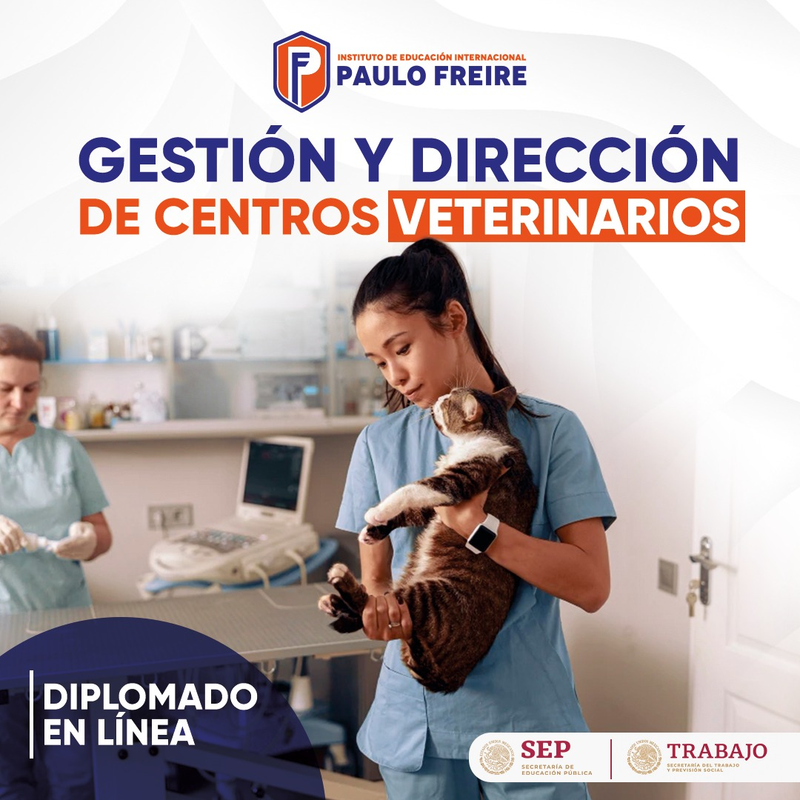
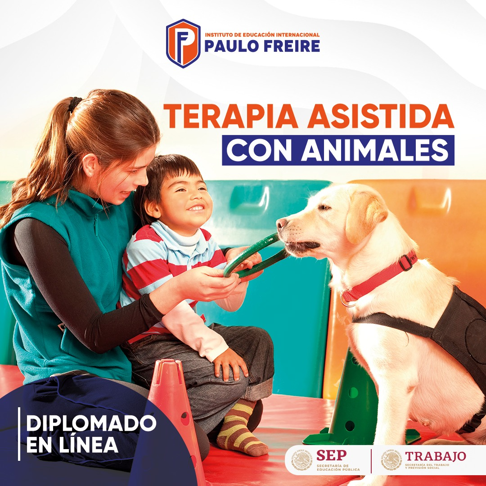

OFERTA EDUCATIVA
OFERTA EDUCATIVA

Enfocado en la administración eficiente de clínicas y hospitales veterinarios, combinando conocimientos de salud animal con habilidades de organización, liderazgo y planificación. Esta área prepara a los profesionales para coordinar equipos de trabajo, optimizar recursos, garantizar la calidad de los servicios médicos veterinarios y ofrecer una atención integral tanto a los animales como a sus propietarios.

Intervención terapéutica que utiliza animales entrenados como parte del proceso de tratamiento para mejorar la salud física, emocional y social de las personas. Esta práctica es dirigida por profesionales de la salud y busca fortalecer habilidades cognitivas, emocionales y sociales mediante la interacción con animales, generando motivación, confianza y bienestar en los pacientes.